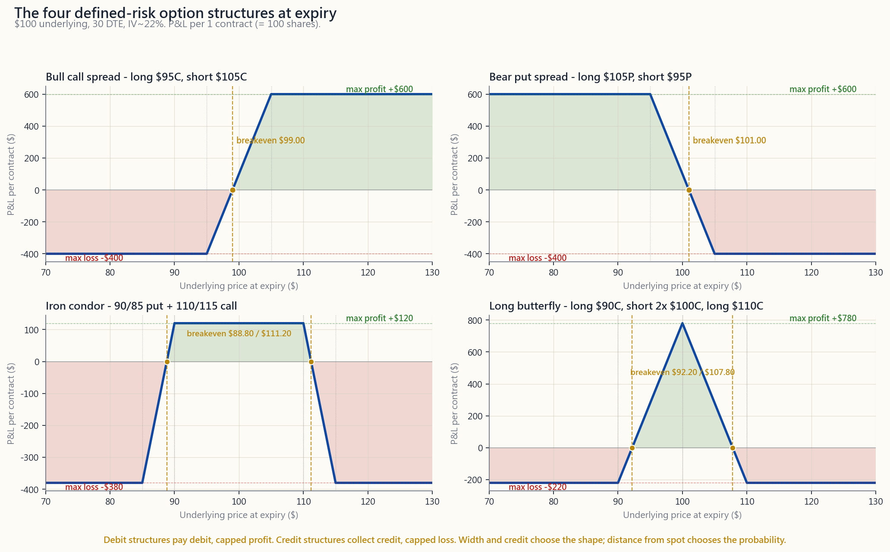
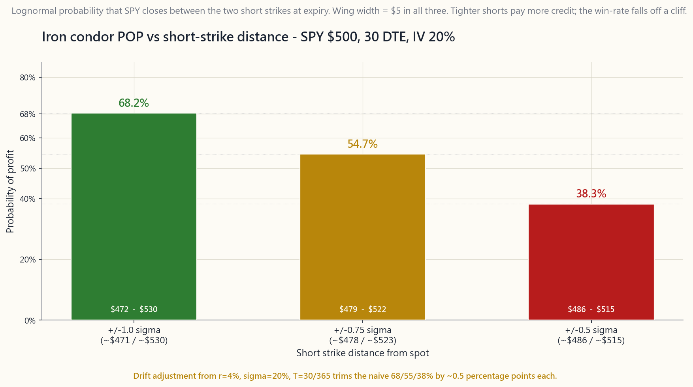

Week 30: Spreads, condors and butterflies — building the barbell out of options
1. Why This Is Important
The last four weeks taught the single-leg vocabulary: long calls and puts as cheap directional bets, covered calls as a paid sell ticket, cash-secured puts as a paid buy ticket, and the Greeks as the partial derivatives that price the whole machine. Single legs are honest, but they are also blunt. A naked short put on SPY at the $500 strike on a $50,000 account ties up $50,000 of collateral and exposes you to a $50,000 hole if the market goes to zero. That is not a position sizing decision — that is a position the size of the entire account.
Spreads fix this. A spread is two (or four) options stitched together on the same underlying so that the long leg caps the loss of the short leg. The position now has a printed maximum loss the day you put it on, a printed maximum profit, and a capital requirement equal to the spread width minus credit received — typically one to three hundred dollars per contract, not five-figure cash. The same $50,000 account can run fifty of these in parallel without ever risking the account on a single tail.
This matters for four concrete reasons:
(1) Defined-risk options ARE the barbell. The barbell holds high-conviction safety on one end and asymmetric, capped-loss speculation on the other. A long-dated SPY call spread, an iron condor on QQQ, a butterfly on AAPL into earnings — every one of these has the exact structural property the barbell asks for: a known, small, prepaid maximum loss in exchange for a payoff that need not be linear in the underlying. The L3 ("asymmetric") sleeve is not built from leveraged ETFs and lottery tickets; it is built from spreads.
**(2) Credit spreads are the engineered version of the L2 income sleeve.** Week 27 sold covered calls and Week 28 sold cash-secured puts; both work but both are capital-heavy. Replacing the cash-secured put with a 5-wide bull put spread keeps the same directional thesis ("I'd buy this name lower"), keeps the same theta-positive carry, and shrinks the capital requirement by 80-95%. The gross monthly yield on capital actually at risk goes up; the dollar income goes down; the survivability goes way up. Most professional premium sellers run spreads, not naked options, for exactly this trade-off.
**(3) Iron condors monetise the fact that markets are mean-reverting inside their realised range about 70% of the time.** An iron condor profits when SPY closes between the two short strikes at expiry. With short strikes at ±1 standard deviation and 30 days to expiry, the lognormal probability of profit is ~68%; with shorts at ±0.75σ it is ~55%; with shorts at ±0.5σ it is ~38%. The trader picks the spot on the probability curve they are willing to live with and sizes the wings to cap the tail. This is mean-reversion *priced and hedged* — not the retail version that holds a falling knife.
**(4) Butterflies and broken-wing butterflies are how you express a precise view.** A long butterfly centred at $100 makes its maximum profit if the stock pins at $100 at expiry and loses a small fixed amount everywhere else. That is a bet on a level, not a direction. A trader who has done the work on a name's earnings reaction or options-expiry pin can express that view for one or two hundred dollars of risk and a 4-to-1 payoff, where a long-stock or naked- options version would cost five figures and offer no such asymmetry.
Spreads are also where a vol-aware trader starts paying attention: debit spreads are short-vega (you bought volatility), credit spreads are long-theta and short-vega (you sold volatility), butterflies are short-vega and short-gamma. Picking the right structure is no longer "bullish vs bearish" — it is "what do I think happens to realised vs implied vol over the next thirty days, conditional on my directional view." That is the language professional options desks speak; this week is where you start speaking it too.
2. What You Need to Know
2.1 The four vertical spreads — one slide, four trades
A vertical spread uses two options of the same type (both calls or both puts), same expiry, and different strikes. Holding one and selling the other gives four named structures:
- Bull call spread (debit). Buy lower-strike call, sell higher-
- Bear put spread (debit). Buy higher-strike put, sell lower-strike
- Bull put spread (credit). Sell higher-strike put, buy lower-
- Bear call spread (credit). Sell lower-strike call, buy higher-
The width is the strike distance — $5, $10, $25, whatever the chain offers. Wider = more capital at risk, more dollars of max profit, same shape. Two trades with the same delta but different widths express the same view at different sizes.
The four payoff shapes — bull call, bear put, iron condor and butterfly all in one frame — are drawn at expiry in course/image/week30_spread_payoffs.py. The maximum profit, maximum loss, and breakeven for each are marked on the chart so you can verify the formulas on the diagram instead of on the page.
![Four-panel payoff diagram at expiry for the canonical defined-risk option structures, all on a $100-area underlying. Top-left: bull call spread (buy $150 / sell $155 call) — the line slopes up between the strikes and caps at +$250 above $155, floor at -$250 below $150, breakeven $152.50. Top-right: bear put spread — mirror image. Bottom-left: iron condor with shorts at $470/$530 on SPY $500 — flat profit zone of +$180 between the two short strikes, sloping down to -$320 outside the wings at $465 and $535. Bottom-right: long butterfly centred at $150 — the classic tent shape, peaking at +$780 at the middle strike and decaying to a -$220 floor beyond either wing. Each panel labels max profit, max loss, and breakevens so the formulas can be read off the chart.](image/week30_spread_payoffs.png)
2.2 Worked example — bull call spread on AAPL at $150
AAPL trades at $150. You expect a quiet drift higher over the next 30 days. The chain shows:
- $150 call: $5.00 mid (delta ~0.55).
- $155 call: $2.50 mid (delta ~0.35).
- Buy 1 AAPL $150 call: pay $5.00.
- Sell 1 AAPL $155 call: receive $2.50.
- Net debit: $2.50 per share = $250 per spread.
- Maximum profit: width minus debit = ($155 - $150) - $2.50 =
- Maximum loss: the debit paid = $250, suffered if AAPL closes
- Breakeven: lower strike + debit = $152.50.
The cost of the spread version is the upside above $155: if AAPL rips to $170, the long call version makes $1,500 and the spread makes only $250. That is the trade — a ceiling in exchange for a floor.
2.3 Iron condor — two credit spreads stitched into one trade
An iron condor is a bull put spread and a bear call spread on the same underlying and the same expiry. Four legs, all out-of-the-money, all collected for credit. The position profits if the underlying closes between the two short strikes at expiry.
Worked example on SPY at $500, 30 days to expiry, IV 20%, r 4%.
The one-month one-standard-deviation move is $500 \times 0.20 \times \sqrt{30/365} \approx \$28.65$. Round to $30. Sell shorts at ±1σ, wings 5 points further out:
- Sell $470 put, buy $465 put: credit ~$0.95.
- Sell $530 call, buy $535 call: credit ~$0.85.
- Total credit: ~$1.80 per share = $180 per condor.
- Width of each wing: $5; max loss = $5 - $1.80 = **$3.20 per
- Capital required: $500 minus credit, i.e. ~$320 (the broker
- Breakevens: $470 - $1.80 = $468.20 and $530 + $1.80 = $531.80.
- Probability of profit (POP): the lognormal probability that SPY
Risk/reward 1.78-to-1 (lose 320 to make 180), POP 68% — this trade has positive expectancy as long as realised volatility comes in at or below the 20% the chain priced. That last clause is everything: the iron condor is a short-vol trade in disguise. When realised vol exceeds implied, the structure loses its edge no matter how the price walk looks. Vol moves first.
The probability-of-profit curve for the SPY $500 iron condor across three short-strike distances is drawn in course/image/week30_condor_pop.py. Tighter shorts give wider profit zones in theta terms but a far lower POP; the chart shows the trade-off at 1σ, 0.75σ, and 0.5σ.
![Bar chart of the lognormal probability-of-profit (POP) for an iron condor on SPY at $500, 30 DTE, IV 20%, plotted against three short-strike distances: 1σ (~±$30 from spot), 0.75σ (~±$22), and 0.5σ (~±$15). The 1σ bar reads ~68% POP, 0.75σ reads ~55%, and 0.5σ reads ~38%. Each bar is annotated with the corresponding net credit and the loss/profit ratio so the trade-off — credit buys POP, POP buys credit — is visible at a glance. The 1σ shorts are the conventional retail default; tighter shorts pay more premium but the win-rate falls off sharply.](image/week30_condor_pop.png)
2.4 Butterfly — pinning the level
A long butterfly centred at strike $K$ is three legs:
- Buy 1 call at $K - w$.
- Sell 2 calls at $K$.
- Buy 1 call at $K + w$.
Worked example on AAPL at $150, 30 days, IV 25%:
- Buy $140 call: pay $11.00.
- Sell 2 $150 calls: receive $5.00 x 2 = $10.00.
- Buy $160 call: pay $1.20.
- Net debit: $11.00 - $10.00 + $1.20 = $2.20 per share = $220.
- Max profit: width minus debit = $10 - $2.20 = **$7.80 per share
- Max loss: the debit = $220, beyond $140 below or $160 above.
- Breakevens: $142.20 and $157.80.
Butterflies are the natural structure for: pinning at a round-number strike near max-pain on options-expiry Friday; expressing a "drift to fair value" view on a stretched name; betting on a quiet earnings reaction after IV has been crushed; or sitting in front of a known catalyst with capped tail risk.
2.5 Picking width, distance, and DTE — the three knobs
Every defined-risk structure has the same three knobs and they are the only knobs that matter:
- Width (strike-to-strike distance of the wings or legs): doubles
- Distance from spot (how far OTM the short strikes sit): the
- Days to expiry (DTE): 30-45 DTE is the sweet spot for credit
A retail trader running a steady book usually fixes two of these three (e.g. 30-delta shorts, 30 DTE) and varies width to size the position. A professional varies all three with the vol surface.
The interactive course/interactive/week30_spread_builder.html lets you toggle structure (vertical / iron condor / butterfly) and move all three knobs in real time, watching net premium, max profit, max loss, breakevens, POP, and the payoff diagram update together.
2.6 Capital efficiency — the side-by-side that justifies the chapter
Same SPY thesis ("market closes between $470 and $530 in 30 days"), five ways to express it:
| Structure | Capital | Max profit | Max loss | POP | Yield on cap |
|---|---|---|---|---|---|
| Long stock (held flat) | $50,000 | ~$1,000 carry | ~$50,000 | ~50% | ~2% / 30d |
| Short straddle, 1σ | ~$15,000 | ~$3,200 | unlimited | ~68% | ~21% / 30d |
| Iron condor, 1σ short, 5-wide | ~$320 | $180 | $320 | ~68% | ~56% / 30d |
| Iron condor, 0.75σ short, 5-wide | ~$280 | $220 | $280 | ~55% | ~78% / 30d |
| Long butterfly at $500 | ~$220 | $780 | $220 | ~25% | ~355% / 30d at peak |
The yield-on-capital column is the punchline. The defined-risk structures are one to two orders of magnitude more efficient on capital than the underlying-stock or short-straddle versions of the same view. The iron condor and butterfly are not exotic — they are the correct way to size a non-directional view inside a barbell.
The price you pay is precision. Every defined-risk trade has a specific window where it works; outside that window it pays the max loss. That is the discipline the structure forces on the trader, and why this chapter is the gateway to L3.
2.7 Tax, assignment, and the practical wrinkles
Vertical spreads almost never get assigned early as a unit — the long leg always covers the short leg if the short is exercised. The real risk is single-leg early assignment near ex-dividend dates on the short call of a credit call spread; if it happens, you wake up short stock with the long call still alive, which is fine but requires same-day action. Iron condors and butterflies share the same property at the wing level.
For tax purposes: defined-risk option spreads on broad-based indices (SPX, NDX, RUT, not SPY/QQQ/IWM ETFs) are 1256-contracted and taxed 60% long-term / 40% short-term regardless of holding period. That is a structural advantage worth ~10 percentage points of after-tax return for a high-bracket US trader running monthly condors. The price is wider bid/ask spreads on the index options versus their ETF cousins. For most retail accounts, SPY/QQQ/IWM condors are the right starting point and the tax difference becomes worth the slippage at six-figure annual options income, not before.
In an IRA, defined-risk spreads are usually permitted at level 3 options approval; naked short options are not. This is one of the underrated reasons a retail trader graduates to spreads — it unlocks the only legal way to run an income-options book inside the tax- sheltered account. Week 31 covers IV rank, vol regimes, and how to size all of this against the realised-vol environment.
3. Common Misconceptions
1. "Credit spreads are 'safer' than debit spreads." They have higher POP but worse risk/reward. A 5-wide credit spread sold for $1.80 has POP ~70% and loses 1.78x what it can make. Over many trades the expected value depends on whether IV was rich versus realised vol; neither structure is automatically safer.
2. "An iron condor with shorts at 1σ is a free 68% win-rate trade." The 68% is conditional on lognormal returns at the priced IV. When IV under-prices realised (vol expansions, gap days, earnings), the true POP collapses. The 1σ condor is a short-vol trade with 1.78-to-1 risk, not a coin flip with extra rake.
3. "Butterflies are too narrow to be useful." They are narrow on price but wide on time. A butterfly placed 21 DTE inside a known pinning name regularly mark-to-markets at 100-200% by 7 DTE without the underlying having to print exactly at the middle strike. The "max profit only at $K" rule applies at expiry; the path matters.
4. "Defined-risk spreads have no margin call risk." They have no assignment margin call (the long leg covers the short leg). They do have variation margin haircuts intra-trade if the broker re-prices the spread mid-life; on a fast move the margin requirement can briefly exceed the maximum loss until the broker remarks.
5. "Wider wings are always safer." Wider wings raise both the dollars of credit and the dollars at risk by the same width factor. The probability profile is unchanged; only the position size changes. Wing width is the size knob, not the safety knob.
6. "I should sell the highest-credit spread on the chain." The highest-credit spread is the one with shorts closest to the money, i.e. the lowest POP. Maximising credit minimises win-rate. Pick a target POP first and let the credit fall out of it.
**7. "An iron condor on a meme stock with 90% IV is a great opportunity."** That 90% IV is the market telling you the realised move is about to be huge. Selling premium into a vol expansion is the textbook way to lose money on a short-vol structure. Sell when IV rank is high and the catalyst is past.
**8. "A bull call spread is a bullish trade." Mostly. It is a bullish trade with a vega haircut. If the underlying rises but implied vol crashes (post-earnings, post-Fed), the spread can make less than expected because both legs are short-vega'd in opposite directions and the long leg dominates while still OTM. Direction is necessary; vol is the wrinkle.
9. "I should always close at 50% profit." The 50%-of-max rule is a heuristic from credit-spread sellers that captures the early-decay sweet spot. For debit spreads it makes much less sense; the right exit is when delta hits 0.85+ on the long leg or 7 DTE, whichever comes first.
10. "Defined-risk means risk-free." Defined-risk means the loss is capped at trade entry. It does not mean small. A 10-wide bear call spread on a stock that gaps 30% overnight loses every dollar of its $1,000 max in a single morning. Capped is not a substitute for sized.
4. Q&A Section
Q1. What's the cleanest way to pick the structure for a given view? Start with two questions: am I directional, and am I long or short vol? Long-direction + long-vol = debit call/put spread. Direction agnostic + short-vol = iron condor. Strong level + short-vol = long butterfly. Direction + short-vol = credit put/call spread. The four boxes cover ~80% of practical setups.
Q2. Is there an optimal width? No. Width controls position size, not edge. Pick the width that puts the dollar max-loss at 1-2% of account equity per trade; that becomes your default. Vary it only when the broker's commissions become material (tight wings on cheap underlyings).
Q3. How is POP actually computed? Lognormal closed form: POP for an iron condor = $\Phi(d^{\text{up}}_2) - \Phi(d^{\text{down}}_2)$ where the d's are the standard BSM term, with the same $r$, $\sigma$, $T$ used for the chain. The interactive does this in JS for you.
Q4. What about buying-power reduction in a margin account? For a credit spread, BPR = wing width − credit, applied to the wider of the call or put side for an iron condor (you can only lose on one side at expiry, so brokers don't double-count). For a debit spread, BPR = debit. For a butterfly, BPR = debit.
Q5. When does a debit spread beat a long call? When you don't need the upside above the short strike. If your target is "AAPL to $155 in 30 days" and you don't think it goes to $170, the debit spread costs half and bleeds half the theta. If you think it goes to $200, buy the call.
Q6. How do I roll a tested credit spread? Standard rule: roll out (later expiry) and down/up (further from current spot) for a small additional credit. Never pay debit to roll a losing spread out in time without moving the strikes; that compounds the loss into the new month. If the only roll on offer is a debit, take the loss and re-enter fresh.
Q7. Are iron condors the same as iron butterflies? No. An iron condor has two different short strikes (call and put). An iron butterfly has the same short strike for both, sold at the money. The iron fly is closer to a short straddle with wings — larger credit, narrower profit zone, lower POP, higher max profit. Most retail desks treat the iron fly as a separate structure.
Q8. What does "broken-wing" mean? A butterfly with unequal wing widths. Buy 1 $140C, sell 2 $150C, buy 1 $165C is a broken-wing butterfly with a wider upper wing. The asymmetry skews the payoff: maximum profit shifts, max loss shrinks on one side and grows on the other. Used to express a "level + a directional bias" view in one ticket.
Q9. Why do I need to know all this if I'm just an L1 indexer? You don't, today. You will the moment you have idle cash on a quiet week and a directional thesis, or the moment a high-IV-rank earnings event tempts you into a too-large naked short put. A 5-line bull put spread turns that temptation into a sized, capped, professional trade. The structures are the discipline.
**Q10. What's the tax difference between a SPY condor and an SPX condor for a US filer?** SPY (and QQQ, IWM) condors are taxed as ordinary short-term capital gains (held <1 year). SPX (and NDX, RUT) condors are 1256 contracts: 60% long-term / 40% short-term blended rate regardless of holding period. For a 35%-bracket trader running $50k of annual condor income, SPX saves roughly $5,000-7,000 of federal tax per year — a meaningful chunk of L2 alpha that exists purely because of the tax code.
Q11. Should I trade weeklies or monthlies? Monthlies (30-45 DTE). Weeklies have steeper theta but much higher gamma and bid/ask noise. For learning and for steady-state retail income the monthly cycle is the right rhythm. Weeklies are an advanced extension once the book runs cleanly.
Q12. How do I know if my POP estimate is realistic? Compare the chain's IV against the 20- and 60-day realised vol of the underlying. If implied is at or below realised, your POP is overstated; the market is telling you it expects a bigger move than the lognormal model. If implied is well above realised (high IV rank), the POP is honest and the trade has positive structural carry. Week 31 makes this routine.
第三十週：價差、鐵鷹及蝶式策略——用期權構建槓鈴組合
1. 為何這一課至關重要
過去四週教你掌握了單腿期權的詞彙：以認購期權和認沽期權作廉價方向性押注、以備兌認購期權收取出售費用、以現金擔保認沽期權收取買入費用，以及希臘字母作為整個定價機制的偏微分。單腿期權直接了當，但也相當粗糙。在五萬美元的帳戶上，對SPY的$500行使價裸沽認沽期權，需要佔用五萬美元的抵押品，若市場歸零便暴露於五萬美元的虧損風險中。這不是倉位規模的決定——這是一個等同於整個帳戶規模的倉位。
價差可以解決這個問題。價差是在同一標的上將兩條腿（或四條腿）期權縫合在一起，使長倉腿封頂短倉腿的虧損。倉位從入場當天便有一個列印在單上的最大虧損、一個列印在單上的最大盈利，以及一個等於價差闊度減去所收期權金的保證金要求——通常每份合約只需一至三百美元，而非五位數的現金。同一個五萬美元的帳戶可以同時運行五十個這樣的倉位，而無需將整個帳戶押注在單一尾部風險上。
這在四個具體層面上至關重要：
(1) 界定風險的期權正是槓鈴策略本身。 槓鈴策略的一端持有高度確信的安全性，另一端持有非對稱、有上限虧損的投機性部位。長期SPY認購期權價差、QQQ的鐵鷹式策略、AAPL業績公布前的蝶式策略——每一個均具備槓鈴策略要求的確切結構特性：以已知的、小額的、預付的最大虧損，換取無需與標的呈線性關係的回報。L3（「非對稱」）倉位並非由槓桿ETF和彩票式押注構成；它由價差策略構成。
(2) 信用價差是L2收入倉位的工程化版本。 第27週沽出備兌認購期權、第28週沽出現金擔保認沽期權；兩者均有效，但均屬資本密集型。以5點寬的牛市認沽期權價差替代現金擔保認沽期權，保留了相同的方向性邏輯（「我願意在更低價買入這隻股票」），保留了相同的正時間值套利特性，並將資本要求縮減80-95%。實際風險資本上的月度毛收益率上升；美元收入下降；存活能力大幅提升。大多數專業期權金沽出者正是為了這種取捨，選擇運行價差而非裸期權。
(3) 鐵鷹式策略將市場在大約70%的時間內於已實現波動範圍內均值回歸的特性變現。 鐵鷹式策略在到期時SPY收市價介於兩個短倉行使價之間時獲利。在短倉行使價設於±1個標準差、到期日30天的情況下，對數正態盈利概率約為68%；短倉設於±0.75σ時約為55%；設於±0.5σ時約為38%。交易者在概率曲線上選取自己願意承受的位置，並調整翼幅以封頂尾部風險。這是已定價並已對沖的均值回歸——而非接住下跌中刀的零售版本。
(4) 蝶式策略和破翼蝶式策略是表達精確觀點的工具。 以$100為中心的多頭蝶式策略，在到期時股票恰好收於$100時達到最大盈利，在其他任何地方均損失一個小的固定金額。這是對水平位置的押注，而非方向性押注。一個已對某隻股票的業績反應或期權到期日釘盤做過充分研究的交易者，可以以一至兩百美元的風險和四比一的回報表達這一觀點，而持有正股或裸期權版本則需花費五位數，且不提供任何此類非對稱性。
價差也是一個具有波動率意識的交易者開始認真關注的地方：借方價差是負波動率（你買入了波動率），信用價差是正時間值和負波動率（你賣出了波動率），蝶式策略是負波動率且負伽馬值。選擇正確的結構不再是「看漲還是看跌」的問題——而是「在我的方向性判斷的前提下，我認為未來三十天已實現波動率與引伸波幅的關係如何」。這是專業期權部門使用的語言；本週正是你開始運用這種語言的起點。
2. 你需要掌握的內容
2.1 四種垂直價差——一張幻燈片，四種交易
垂直價差使用兩個同類型（全為認購期權或全為認沽期權）、相同到期日、不同行使價的期權。持有其中一個並沽出另一個，形成四種命名的結構：
- 牛市認購期權價差（借方）。買入較低行使價認購期權，沽出較高行使價認購期權。支付淨期權金。最大盈利 = 闊度減去借方金額。最大虧損 = 借方金額。看漲、有上限、負時間值。
- 熊市認沽期權價差（借方）。買入較高行使價認沽期權，沽出較低行使價認沽期權。支付淨期權金。最大盈利 = 闊度減去借方金額。最大虧損 = 借方金額。看跌、有上限、負時間值。
- 牛市認沽期權價差（信用）。沽出較高行使價認沽期權，買入較低行使價認沽期權。收取淨期權金。最大盈利 = 所收期權金。最大虧損 = 闊度減去所收期權金。輕度看漲至中性、正時間值。
- 熊市認購期權價差（信用）。沽出較低行使價認購期權，買入較高行使價認購期權。收取淨期權金。最大盈利 = 所收期權金。最大虧損 = 闊度減去所收期權金。輕度看跌至中性、正時間值。
四種到期時的回報形狀——牛市認購、熊市認沽、鐵鷹式及蝶式策略同呈一圖——繪製於 course/image/week30_spread_payoffs.py。 圖表上標注了每種策略的最大盈利、最大虧損及損益平衡點，讓你可以在圖表上而非在書頁上驗證公式。

2.2 實例——AAPL $150的牛市認購期權價差
AAPL報$150。你預期未來30天股價將溫和上漲。期權鏈顯示：
- $150認購期權：中間價$5.00（delta約0.55）。
- $155認購期權：中間價$2.50（delta約0.35）。
- 買入 1份AAPL $150認購期權：支付$5.00。
- 沽出 1份AAPL $155認購期權：收取$2.50。
- 淨借方： 每股$2.50 = 每份價差$250。
- 最大盈利： 闊度減去借方金額 = ($155 - $150) - $2.50 =
- 最大虧損： 所支付的借方金額 = $250，在到期時AAPL收市於或低於$150時承受。
- 損益平衡點： 較低行使價加借方金額 = $152.50。
價差版本的代價是$155以上的上行空間：若AAPL急升至$170，長倉認購期權版本盈利$1,500，而價差版本僅盈利$250。這就是取捨——以設置上限換取設置下限。
2.3 鐵鷹式策略——將兩個信用價差縫合成一筆交易
鐵鷹式策略是在同一標的和同一到期日上，將一個牛市認沽期權價差和一個熊市認購期權價差結合在一起。四條腿，全部價外，全部收取期權金。若標的在到期時收市於兩個短倉行使價之間，該倉位獲利。
實例：SPY報$500，到期日30天，引伸波幅20%，利率4%。
一個月的一個標準差波動為 $500 \times 0.20 \times \sqrt{30/365} \approx \$28.65$。取整為$30。 在±1σ設置短倉，翼部再往外5點：
- 沽出 $470認沽期權，買入 $465認沽期權：期權金約$0.95。
- 沽出 $530認購期權，買入 $535認購期權：期權金約$0.85。
- 合計期權金： 約每股$1.80 = 每份鐵鷹式策略$180。
- 每個翼部闊度： $5；最大虧損 = $5 - $1.80 = 每股$3.20 = $320。（到期時只有一個翼部會虧損。）
- 所需資本： 翼部闊度減去期權金，即約$320（經紀以翼部闊度作保證金）。
- 損益平衡點： $470 - $1.80 = $468.20，以及$530 + $1.80 = $531.80。
- 盈利概率（POP）： SPY在到期時收市於[$470, $530]之間的對數正態概率，約68%。
SPY $500鐵鷹式策略在三種短倉行使價距離下的盈利概率曲線，繪製於 course/image/week30_condor_pop.py。 較緊的短倉在時間值層面提供較寬的利潤區間，但盈利概率大幅下降；圖表展示了1σ、0.75σ和0.5σ三個水平的取捨關係。

2.4 蝶式策略——釘住水平位置
以行使價$K為中心的多頭蝶式策略由三條腿組成：
- 買入 1份$K - w認購期權。
- 沽出 2份$K認購期權。
- 買入 1份$K + w認購期權。
實例：AAPL報$150，到期日30天，引伸波幅25%：
- 買入 $140認購期權：支付$11.00。
- 沽出 2份 $150認購期權：收取$5.00 × 2 = $10.00。
- 買入 $160認購期權：支付$1.20。
- 淨借方： $11.00 - $10.00 + $1.20 = 每股$2.20 = $220。
- 最大盈利： 闊度減去借方金額 = $10 - $2.20 = **每股$7.80
- 最大虧損： 借方金額 = $220，在$140以下或$160以上均如此。
- 損益平衡點： $142.20和$157.80。
蝶式策略最適合的情景包括：在期權到期日週五的整數行使價附近進行最大持倉量釘盤；對過度拉伸股票表達「向公允價值漂移」的觀點；在引伸波幅被壓縮後押注業績公告後的平靜反應；或在已知催化劑面前以有限尾部風險持倉。
2.5 選擇闊度、距離和到期日——三個調節旋鈕
每個界定風險的結構都有相同的三個旋鈕，而且這是唯一重要的旋鈕：
- 闊度（翼部或腿部的行使價距離）：使風險金額和期權金金額翻倍，但形狀不變。闊度是規模旋鈕。
- 距離現貨的遠近（短倉行使價距現貨多遠）：盈利概率旋鈕。靠近現貨 = 更多期權金、更低盈利概率、更高delta。遠離現貨 = 更少期權金、更高盈利概率、更低delta。短倉上的delta是一個簡潔的代理指標：30 delta短倉 ≈ 30%價內概率 ≈ 每條腿70%盈利概率。
- 到期日天數（DTE）：30-45天到期日是信用價差的最佳區間（已在第27週介紹）。時間值在21天到期日以內加速損耗；波動率值縮減。到期日越短 = 時間值衰減越快、伽馬風險越大；到期日越長 = 套利越穩定、佔用資本越多。
互動工具 interactive/week30_spread_builder.html 讓你即時切換結構（垂直價差 / 鐵鷹式策略 / 蝶式策略），並實時移動全部三個旋鈕，同步觀察淨期權金、最大盈利、最大虧損、損益平衡點、盈利概率及回報圖的更新。
2.6 資本效率——本章核心的並排比較
以同一SPY論點（「市場在30天後收市於$470至$530之間」）為基礎，五種表達方式：
| 結構 | 資本 | 最大盈利 | 最大虧損 | 盈利概率 | 資本收益率 |
|---|---|---|---|---|---|
| 持有正股（持平） | $50,000 | 約$1,000套利 | 約$50,000 | 約50% | 約2% / 30天 |
| 沽出跨式組合，1σ | 約$15,000 | 約$3,200 | 無限 | 約68% | 約21% / 30天 |
| 鐵鷹式策略，1σ短倉，5點寬 | 約$320 | $180 | $320 | 約68% | 約56% / 30天 |
| 鐵鷹式策略，0.75σ短倉，5點寬 | 約$280 | $220 | $280 | 約55% | 約78% / 30天 |
| 以$500為中心的多頭蝶式策略 | 約$220 | $780 | $220 | 約25% | 峰值約355% / 30天 |
資本收益率一欄是本章的核心結論。界定風險的結構在資本效率上比同一觀點的正股或沽出跨式組合版本高出一至兩個數量級。鐵鷹式策略和蝶式策略並不複雜——它們是在槓鈴策略中表達非方向性觀點的正確方式。
你付出的代價是精確度。每一種界定風險的交易都有一個特定的生效視窗；在這個視窗之外，它便支付最大虧損。這是結構對交易者施加的紀律，也正是本章成為通往L3門戶的原因。
2.7 稅務、行使及實際操作注意事項
垂直價差作為一個整體幾乎從不會被提前行使——長倉腿在短倉被行使時始終覆蓋短倉腿。真正的風險是信用認購期權價差的短倉認購期權在除息日前後被單腿提前行使；若發生這種情況，你將醒來持有股票空倉而長倉認購期權仍然有效，這雖然可以接受，但需要當天採取行動。鐵鷹式策略和蝶式策略在翼部層面具有相同的特性。
從稅務角度而言：在廣基指數（SPX、NDX、RUT，不包括 SPY/QQQ/IWM ETF）上的界定風險期權價差屬於1256合約，無論持有期限如何，均按60%長期/40%短期稅率徵稅。對於在高稅率等級運行月度鐵鷹式策略的美國交易者而言，這在稅後回報方面具有約10個百分點的結構性優勢。代價是指數期權相對其ETF同類的買賣差價較寬。對於大多數零售帳戶，SPY/QQQ/IWM鐵鷹式策略是正確的起點，而稅務差異在年度期權收入達到六位數時才值得為之承受較大的滑點，而非更早。
在個人退休帳戶（IRA）中，界定風險價差通常在3級期權批准下獲准交易；裸期權則不獲許可。這是零售交易者升級至價差的一個被低估的原因——它開啟了在稅務優惠帳戶內合法運行期權收入組合的唯一途徑。第31週將介紹引伸波幅排名、波動率環境，以及如何根據已實現波動率環境調整所有這些策略的規模。
3. 常見誤解
1. 「信用價差比借方價差『更安全』。」 信用價差的盈利概率較高，但風險/回報較差。以$1.80沽出一個5點寬的信用價差，盈利概率約70%，虧損幅度是最大盈利的1.78倍。在多筆交易中，預期值取決於引伸波幅是否高於已實現波動率；任何一種結構都不會自動更安全。
2. 「在1σ短倉的鐵鷹式策略是免費的68%勝率交易。」 68%是基於定價引伸波幅下對數正態回報的條件概率。當引伸波幅低估已實現波動率（波動率膨脹、跳空日、業績公告），真實盈利概率便會崩潰。1σ鐵鷹式策略是一個具有1.78比1風險的沽出波動率交易，而非附帶額外傭金的拋硬幣遊戲。
3. 「蝶式策略範圍太窄，沒有實際用途。」 它在價格上範圍窄，但在時間上範圍寬。一個在21天到期日前建立於已知釘盤標的上的蝶式策略，在距到期日7天時定期按市值計算達到100-200%的回報，而標的無需恰好收市於中間行使價。「最大盈利僅在$K」的規則適用於到期時；價格路徑同樣重要。
4. 「界定風險價差沒有追繳保證金的風險。」 它們沒有行使追繳保證金的風險（長倉腿覆蓋短倉腿）。但在交易進行中，若經紀在倉位存續期間重新定價，它們確實面臨按市值計算的保證金扣減；在快速波動時，保證金要求可能在經紀重新定價之前短暫超過最大虧損。
5. 「更寬的翼部總是更安全。」 更寬的翼部按相同的闊度倍數同時提高期權金金額和風險金額。概率分佈不變；只有倉位規模改變。翼部闊度是規模旋鈕，而非安全旋鈕。
6. 「我應該在期權鏈上沽出期權金最高的價差。」 期權金最高的價差是短倉最靠近價位的那個，即盈利概率最低的那個。最大化期權金就是最小化勝率。先選定目標盈利概率，讓期權金從中自然得出。
7. 「引伸波幅90%的模因股的鐵鷹式策略是絕佳機會。」 90%的引伸波幅是市場在告訴你，已實現波動即將大幅上升。在波動率膨脹時沽出期權金，是在沽出波動率結構上虧錢的教科書式方法。應在引伸波幅排名高且催化劑已過去時沽出。
8. 「牛市認購期權價差是看漲交易。」 大致上是。它是一個帶有波動率折扣的看漲交易。若標的上漲但引伸波幅崩潰（業績公告後、聯儲局決議後），價差的盈利可能低於預期，因為兩條腿在相反方向上均具有負波動率特性，而長倉腿在仍然價外時佔主導。方向性判斷是必要的；波動率是其中的變數。
9. 「我應該總在50%盈利時平倉。」 50%最大盈利規則是信用價差沽出者常用的經驗法則，以捕捉早期衰減的最佳時機。對於借方價差，這個規則意義要小得多；正確的退出時機是長倉腿的delta達到0.85+，或距到期日7天，以先到者為準。
10. 「界定風險意味著無風險。」 界定風險意味著虧損在入場時即有上限。這並不意味著虧損金額小。一個在隔夜跳漲30%的股票上建立的10點寬熊市認購期權價差，在一個上午便損失其$1,000最大虧損的全部。有上限不等同於規模合適。
4. 問答環節
問題1. 根據特定觀點選擇結構的最簡潔方法是什麼？ 從兩個問題開始：我是否有方向性判斷，以及我是多頭還是空頭波動率？方向性 + 多頭波動率 = 借方認購期權/認沽期權價差。方向性中性 + 空頭波動率 = 鐵鷹式策略。強烈水平位置判斷 + 空頭波動率 = 多頭蝶式策略。方向性 + 空頭波動率 = 信用認沽期權/認購期權價差。這四個組合涵蓋了約80%的實際操作設置。
問題2. 是否存在最優闊度？ 不存在。闊度控制倉位規模，而非優勢。選擇使每筆交易的美元最大虧損佔帳戶淨值1-2%的闊度；這便成為你的默認設置。只有在經紀佣金對於廉價標的的緊窄翼部變得重要時才調整。
問題3. 盈利概率實際上是如何計算的？ 對數正態封閉公式：鐵鷹式策略的盈利概率 = $\Phi(d^{\text{up}}_2) - \Phi(d^{\text{down}}_2)$，其中d值為標準BSM項，使用與期權鏈相同的$r$、$\sigma$、$T$。互動工具以JavaScript為你完成這一計算。
問題4. 保證金帳戶中的購買力削減情況如何？ 對於信用價差，購買力削減 = 翼部闊度減去期權金，對於鐵鷹式策略，適用於認購期權或認沽期權兩側中較寬的一側（到期時只能在一側虧損，因此經紀不會雙重計算）。對於借方價差，購買力削減 = 借方金額。對於蝶式策略，購買力削減 = 借方金額。
問題5. 借方價差何時優於長倉認購期權？ 當你不需要短倉行使價以上的上行空間時。若你的目標是「AAPL在30天內漲至$155」，且你不認為它會漲至$170，借方價差成本減半且時間值損耗減半。若你認為它會漲至$200，買入認購期權。
問題6. 如何展期一個受測試的信用價差？ 標準規則：以少量額外期權金往後展期（較晚的到期日）並向下/向上調整（進一步遠離當前現貨）。切勿支付借方將虧損中的價差在時間上展期而不移動行使價；這會將虧損複利至下個月。若唯一可用的展期需要支付借方，就直接認虧平倉並重新入場。
問題7. 鐵鷹式策略與鐵蝶式策略相同嗎？ 不同。鐵鷹式策略有兩個不同的短倉行使價（認購期權和認沽期權）。鐵蝶式策略的認購期權和認沽期權使用相同的短倉行使價，均在價位附近沽出。鐵蝶式策略更接近帶翼部的沽出跨式組合——期權金更大、利潤區間更窄、盈利概率更低、最大盈利更高。大多數零售部門將鐵蝶式策略視為一種獨立結構。
問題8. 「破翼」是什麼意思？ 指翼部不等寬的蝶式策略。買入1份$140認購期權、沽出2份$150認購期權、買入1份$165認購期權，是一個上翼較寬的破翼蝶式策略。這種不對稱性使回報傾斜：最大盈利移位，一側的最大虧損縮小，另一側則增大。用於在單一筆交易中表達「水平位置加上方向性偏向」的觀點。
問題9. 如果我只是一個L1指數投資者，為何需要了解這些？ 今天不需要。當你在平靜的一週持有閒置現金且有方向性判斷時，或當高引伸波幅排名的業績事件誘使你建立過大的裸沽認沽期權時，你就需要了解。一個5條腿的牛市認沽期權價差，可以將那種誘惑轉化為一個規模合適、有上限、專業化的交易。這些結構就是紀律本身。
問題10. 對於美國報稅人，SPY鐵鷹式策略與SPX鐵鷹式策略在稅務上有何差異？ SPY（以及QQQ、IWM）鐵鷹式策略按普通短期資本增值徵稅（持有不足1年）。SPX（以及NDX、RUT）鐵鷹式策略屬於1256合約：無論持有期限如何，均按60%長期/40%短期混合稅率計算。對於在35%稅率等級每年運行5萬美元鐵鷹式策略收入的交易者，SPX每年可節省約5,000至7,000美元的聯邦稅——這是完全由稅法決定的L2阿爾法中的一筆可觀金額。
問題11. 我應該交易每週期權還是每月期權？ 每月期權（30-45天到期日）。每週期權的時間值衰減更陡峭，但伽馬值更高、買賣差價噪音更大。對於學習和穩定的零售收入，每月周期是正確的節奏。每週期權是一個進階延伸，在倉位組合運行順暢後才予以考慮。
問題12. 如何判斷我的盈利概率估算是否合理？ 將期權鏈的引伸波幅與標的的20天和60天已實現波動率進行比較。若引伸波幅處於或低於已實現波動率，你的盈利概率被高估；市場在告訴你，它預期的波動幅度大於對數正態模型所示。若引伸波幅遠高於已實現波動率（高引伸波幅排名），盈利概率是真實的，且交易具有正的結構性套利。第31週將使這一判斷成為常規操作。
第三十週：價差、禿鷹策略與蝶式策略——用選擇權打造槓鈴組合
1. 為什麼這很重要
過去四週教了單腿的基本詞彙：買權和賣權作為低成本的方向性押注、掩護性買權作為有償賣出票券、現金擔保賣權作為有償買入票券，以及希臘字母作為為整套機制定價的偏微分。單腿選擇權直接易懂，但也相當粗糙。在一個50,000美元帳戶裡，裸賣一張履約價$500的SPY賣權，需要佔用50,000美元的擔保品，萬一市場歸零，就會面臨50,000美元的虧損缺口。這不是部位規模的決策問題——而是一個部位吃掉整個帳戶的問題。
價差策略解決了這個問題。價差是將兩條（或四條）腿縫合在同一標的上的選擇權組合，透過買入腿來限制賣出腿的損失。這個部位在建倉當天就印好了最大損失與最大獲利，所需資金等於價差寬度減去收到的權利金——通常每口合約只需一到三百美元，而非五位數的現金。同樣的50,000美元帳戶可以同時運行五十組這樣的策略，而不必把整個帳戶押在單一尾部風險上。
這有四個具體的重要原因：
(1) 有限風險選擇權策略就是槓鈴。 槓鈴在一端持有高確信度的安全資產，另一端持有具有非對稱性且損失有限的投機部位。長天期的SPY買權價差、QQQ上的鐵禿鷹策略、AAPL財報行情前的蝶式策略——每一種都具備槓鈴所要求的確切結構特性：以已知的、小額的、預付的最大損失，換取不必與標的物呈線性關係的報酬。L3（「非對稱性」）部位不是由槓桿指數股票型基金和彩票式投機標的構成的，而是由價差策略構成的。
(2) 信用價差是L2收益部位的精緻版。 第27週賣出掩護性買權，第28週賣出現金擔保賣權；兩者都有效，但都資本密集。以5點寬的多頭賣權價差取代現金擔保賣權，保留了相同的方向性判斷（「我願意在更低位置買入這檔股票」），保留了相同的正Theta收益，並將所需資金縮減了80%至95%。實際承擔風險的資本所對應的月毛利提高了；美元收益降低了；存活率大幅提高了。大多數專業的權利金賣方都是做價差而非裸賣選擇權，正是基於這個取捨。
(3) 鐵禿鷹策略將市場在其已實現區間內均值回歸約70%的事實變現。 鐵禿鷹策略在到期時SPY收在兩個賣出履約價之間時獲利。在到期前30天，賣出履約價設在±1個標準差時，對數常態勝率約為68%；設在±0.75σ時約為55%；設在±0.5σ時約為38%。交易者在勝率曲線上選定自己願意承受的位置，並調整保護翼的寬度來限制尾部損失。這是定價且避險過的均值回歸——而不是接落刀的散戶版本。
(4) 蝶式策略和不對稱蝶式策略是表達精確觀點的方式。 以$100為中間履約價的多頭蝶式策略，在到期時標的恰好收在$100時獲得最大獲利，在其他任何位置損失固定的小額金額。這是對某一個價位的押注，而不是對方向的押注。若交易者對某檔股票的財報反應或選擇權到期日磁吸效應做足了功課，便能以一兩百美元的風險和4比1的報酬倍數來表達該觀點，而多頭持股或裸買選擇權的版本則需要五位數的成本，且毫無這種非對稱性。
價差策略也是波動率意識交易者開始注意的地方：買權價差是空波動率的（你買了波動率），信用價差是正Theta且空波動率的（你賣了波動率），蝶式策略是空波動率且空Gamma的。選對結構不再只是「看多還是看空」——而是「在我的方向性判斷前提下，未來三十天我認為已實現波動率和隱含波動率會如何演變」。這是專業選擇權交易桌所說的語言；本週就是你開始說這種語言的起點。
2. 你需要了解的內容
2.1 四種垂直價差——一張圖，四種交易
垂直價差使用兩個相同類型（同為買權或同為賣權）、相同到期日、不同履約價的選擇權。買入一個並賣出另一個，可組成四種命名結構：
- 多頭買權價差（支付權利金）。買入較低履約價買權，賣出較高履約價買權。支付淨權利金。最大獲利 = 價差寬度減去權利金支出。最大損失 = 支出的權利金。看多、有頂、負Theta。
- 空頭賣權價差（支付權利金）。買入較高履約價賣權，賣出較低履約價賣權。支付淨權利金。最大獲利 = 價差寬度減去權利金支出。最大損失 = 支出的權利金。看空、有頂、負Theta。
- 多頭賣權價差（收取權利金）。賣出較高履約價賣權，買入較低履約價賣權。收取淨權利金。最大獲利 = 收取的權利金。最大損失 = 價差寬度減去收取的權利金。溫和看多至中性、正Theta。
- 空頭買權價差（收取權利金）。賣出較低履約價買權，買入較高履約價買權。收取淨權利金。最大獲利 = 收取的權利金。最大損失 = 價差寬度減去收取的權利金。溫和看空至中性、正Theta。
四種報酬形狀——多頭買權價差、空頭賣權價差、鐵禿鷹策略和蝶式策略均在一個圖框內，以到期時的形式繪製於 course/image/week30_spread_payoffs.py。 每種策略的最大獲利、最大損失和損益兩平點均標示在圖上，讓你可以直接從圖上驗證公式，而非在文字頁面上推算。
2.2 實例演練——AAPL $150的多頭買權價差
AAPL交易價格為$150。你預期未來30天將溫和上漲。選擇權鏈顯示：
- $150買權：中間價$5.00（Delta約0.55）。
- $155買權：中間價$2.50（Delta約0.35）。
- 買入1口AAPL $150買權：支付$5.00。
- 賣出1口AAPL $155買權：收取$2.50。
- 淨支出： 每股$2.50 = 每口價差$250。
- 最大獲利： 寬度減去支出 = ($155 - $150) - $2.50 = 每股$2.50 = 每口價差$250，在到期時AAPL收在$155或以上時實現。
- 最大損失： 支付的權利金 = $250，在到期時AAPL收在$150或以下時承受。
- 損益兩平： 較低履約價加上支出 = $152.50。
選擇價差版本的代價是放棄$155以上的上行空間：如果AAPL大漲至$170，單買買權版本獲利$1,500，而價差只獲利$250。這就是取捨——以封頂換取護底。
2.3 鐵禿鷹策略——兩個信用價差縫合成一筆交易
鐵禿鷹策略是針對同一標的、同一到期日的多頭賣權價差加上空頭買權價差。四條腿，全部價外，全部收取權利金。只要標的物在到期時收於兩個賣出履約價之間，部位即獲利。
以SPY在$500、30天到期、隱含波動率20%、利率4%為例進行實例演練。
一個月一個標準差的波動幅度為 $500 \times 0.20 \times \sqrt{30/365} \approx \$28.65$，約為$30。 賣出履約價設在±1σ，保護翼再往外延伸5點：
- 賣出$470賣權，買入$465賣權：收取約$0.95。
- 賣出$530買權，買入$535買權：收取約$0.85。
- 總收取權利金： 約每股$1.80 = 每口鐵禿鷹$180。
- 每側翼寬： $5；最大損失 = $5 - $1.80 = 每股$3.20 = $320。（到期時只有一側翼可能產生損失。）
- 所需資金： $500減去權利金，即約$320（券商以翼寬作為保證金）。
- 損益兩平： $470 - $1.80 = $468.20，以及$530 + $1.80 = $531.80。
- 勝率（POP）： SPY在到期時收於[$470, $530]之間的對數常態機率，約68%。
SPY $500鐵禿鷹策略在三種賣出履約價距離下的勝率曲線，繪製於 course/image/week30_condor_pop.py。 賣出履約價越靠近，在Theta方面的獲利區間越寬，但勝率大幅下降；圖表顯示了1σ、0.75σ和0.5σ三種情況下的取捨。
2.4 蝶式策略——釘住某一個價位
以履約價$K為中心的多頭蝶式策略由三條腿組成：
- 買入1口$K - w買權。
- 賣出2口$K買權。
- 買入1口$K + w買權。
以AAPL在$150、30天到期、隱含波動率25%為例進行實例演練：
- 買入$140買權：支付$11.00。
- 賣出2口$150買權：收取$5.00 × 2 = $10.00。
- 買入$160買權：支付$1.20。
- 淨支出： $11.00 - $10.00 + $1.20 = 每股$2.20 = $220。
- 最大獲利： 寬度減去支出 = $10 - $2.20 = 每股$7.80 = $780，僅在到期時AAPL恰好收在$150時實現。
- 最大損失： 支出的權利金 = $220，在低於$140或高於$160時發生。
- 損益兩平： $142.20和$157.80。
蝶式策略最適合的情境：在選擇權到期日當天於最大痛苦點的整數履約價附近釘住；對拉伸過度個股表達「回歸公允價值」的觀點；在隱含波動率崩潰後押注財報反應平淡；或在已知催化劑前坐等、同時封頂尾部風險。
2.5 選擇寬度、距離和到期天數——三個調節旋鈕
每個有限風險結構都有相同的三個旋鈕，且只有這三個旋鈕重要：
- 寬度（翼部或各腿之間的履約價距離）：風險金額和收取的權利金翻倍，形狀不變。寬度是規模旋鈕。
- 距現價的距離（賣出履約價距現價有多遠的價外）：即勝率旋鈕。越靠近現價 = 收取更多權利金、勝率越低、Delta越高。越遠離現價 = 收取更少權利金、勝率越高、Delta越低。賣出腿的Delta是一個簡潔的代理指標：30 Delta的賣出 ≈ 30%的價內機率 ≈ 每腿70%的勝率。
- 到期天數（DTE）：30至45天到期是信用價差的甜蜜點（第27週已介紹）。Theta在21天到期內加速；Vega縮減。短天期 = 損耗更快、Gamma風險更高；長天期 = 收益更穩定、佔用資金更長。
互動工具interactive/week30_spread_builder.html 讓你即時切換結構（垂直價差／鐵禿鷹策略／蝶式策略）並移動所有三個旋鈕，同步觀察淨權利金、最大獲利、最大損失、損益兩平點、勝率和報酬圖的更新。
2.6 資本效率——證明本章合理性的對比分析
相同的SPY判斷（「市場將在30天內收於$470至$530之間」），五種表達方式：
| 結構 | 資金 | 最大獲利 | 最大損失 | 勝率 | 資本報酬率 |
|---|---|---|---|---|---|
| 多頭持股（維持平倉） | $50,000 | 約$1,000持有收益 | 約$50,000 | 約50% | 約2% / 30天 |
| 裸賣跨式部位，1σ | 約$15,000 | 約$3,200 | 無限 | 約68% | 約21% / 30天 |
| 鐵禿鷹策略，1σ賣出，5點寬 | 約$320 | $180 | $320 | 約68% | 約56% / 30天 |
| 鐵禿鷹策略，0.75σ賣出，5點寬 | 約$280 | $220 | $280 | 約55% | 約78% / 30天 |
| 以$500為中心的多頭蝶式策略 | 約$220 | $780 | $220 | 約25% | 峰值約355% / 30天 |
資本報酬率這一欄是最關鍵的結論。有限風險結構在資本運用上比持有標的股票或裸賣跨式部位的相同觀點高出一至兩個數量級。鐵禿鷹策略和蝶式策略並非奇異的工具——它們是在槓鈴組合內對中性觀點進行規模化的正確方式。
你付出的代價是精確性。每一筆有限風險交易都有一個特定的獲利窗口；在這個窗口之外，就會損失最大損失金額。這是結構強加給交易者的紀律，也是為什麼本章是通往L3的入口。
2.7 稅務、提前履約與實務要點
垂直價差作為一個整體幾乎不會提前被履約——因為買入腿在賣出腿被履約時始終能提供保護。真正的風險是信用買權價差的賣出買權單腿在除息日前後被提前履約；若發生，你醒來時會發現自己持有空頭股份，而多頭買權仍然有效，這沒問題，但需要當天採取行動。鐵禿鷹策略和蝶式策略在翼尖層面也有相同的特性。
就稅務而言：針對廣基指數（SPX、NDX、RUT，而非 SPY/QQQ/IWM 指數股票型基金）的有限風險選擇權價差適用第1256條合約，無論持有期間長短，均按60%長期資本利得／40%短期資本利得的混合稅率課稅。對於每月運作鐵禿鷹策略的高稅率美國交易者而言，這一結構性優勢約相當於約10個百分點的稅後報酬——其代價是指數選擇權與其指數股票型基金同類產品相比有較寬的買賣價差。對大多數散戶帳戶而言，SPY/QQQ/IWM的鐵禿鷹策略是正確的起點，稅差只有在年度選擇權收益達到六位數時才值得去換取更高的滑價，在那之前則不必考慮。
在個人退休帳戶（IRA）中，有限風險價差通常在選擇權三級核准後獲得允許；裸賣選擇權則不被允許。這是散戶交易者轉向價差策略的一個被低估的原因——它開啟了在免稅帳戶內合法運作選擇權收益部位簿的唯一途徑。第31週將介紹隱含波動率排名、波動率機制，以及如何依據已實現波動率環境對所有這些進行規模化。
3. 常見誤解
1. 「信用價差比權利金支出價差『更安全』。」 信用價差的勝率更高，但風險報酬比更差。以$1.80賣出一個5點寬的信用價差，勝率約70%，損失是最大獲利的1.78倍。在多次交易後，期望值取決於隱含波動率相對於已實現波動率是否偏高；兩種結構都不是自動更安全的。
2. 「賣出履約價在1σ的鐵禿鷹策略是免費的68%勝率交易。」 68%是以定價隱含波動率為前提下的對數常態條件機率。當隱含波動率低估了已實現波動率（波動率擴張、跳空日、財報行情）時，真實勝率就會崩潰。1σ鐵禿鷹是一筆風險比1.78比1的空波動率交易，而不是帶有額外抽成的擲硬幣遊戲。
3. 「蝶式策略的獲利區間太窄，沒有實用價值。」 蝶式策略在價格方面很窄，但在時間方面很寬。在已知有磁吸效應個股上以21天到期建立的蝶式策略，在沒有到達中間履約價的情況下，經常在7天到期前的逐市計值報酬率就達到100%至200%。「最大獲利僅在$K時」的規則適用於到期時；路徑本身也重要。
4. 「有限風險價差沒有追繳保證金的風險。」 它們沒有履約追繳保證金的風險（買入腿涵蓋賣出腿）。但當券商在交易期間對價差重新定價時，它們確實存在交易中的變動保證金扣押；在快速行情中，保證金要求可能短暫超過最大損失，直到券商重新標記為止。
5. 「更寬的翼尖總是更安全。」 更寬的翼尖同時以相同的寬度倍數提高了收取的權利金和承擔的風險金額。勝率分佈不變；只有部位規模改變。翼尖寬度是規模旋鈕，不是安全旋鈕。
6. 「我應該在選擇權鏈上賣出收取最多權利金的價差。」 收取最多權利金的價差是賣出履約價最靠近現價的那個，也就是勝率最低的那個。最大化權利金收取意味著最小化勝率。先選定目標勝率，讓收取的權利金自然落出。
7. 「在隱含波動率90%的迷因股上做鐵禿鷹策略是絕佳機會。」 那90%的隱含波動率是市場在告訴你，即將出現大幅波動。在波動率擴張時賣出權利金，是教科書式的空波動率結構虧損方式。在隱含波動率排名高且催化劑已過後賣出。
8. 「多頭買權價差是看多的交易。」 大致上是。但它是一個帶有Vega折扣的看多交易。如果標的物上漲但隱含波動率崩潰（財報後、聯準會決策後），價差的獲利可能低於預期，因為兩條腿的空Vega方向相反，且多頭腿在仍然是價外時佔主導地位。方向是必要條件；波動率才是關鍵變數。
9. 「我應該總是在獲利50%時平倉。」 50%最大獲利規則是信用價差賣方的經驗法則，用來捕捉早期損耗的甜蜜點。對於支付權利金的價差，這個規則意義小得多；正確的出場時機是當多頭腿的Delta達到0.85以上，或距到期7天，以先發生者為準。
10. 「有限風險意味著無風險。」 有限風險意味著損失在建倉時就已封頂。這並不意味著損失很小。一個10點寬的空頭買權價差，若持有的股票隔夜跳空上漲30%，一個早上就會損失全部$1,000的最大損失。封頂不能取代規模化控管。
4. 問答章節
Q1. 針對特定觀點選擇結構最清晰的方式是什麼？ 從兩個問題出發：我是否有方向性判斷？我是做多還是做空波動率？有方向性 + 多波動率 = 支付權利金的買權/賣權價差。無方向性 + 空波動率 = 鐵禿鷹策略。強烈釘住某一價位 + 空波動率 = 多頭蝶式策略。有方向性 + 空波動率 = 信用賣權/買權價差。這四個格子涵蓋了約80%的實際應用情境。
Q2. 有最優寬度嗎？ 沒有。寬度控制部位規模，而非優勢。選擇能使每筆交易的美元最大損失佔帳戶資產1%至2%的寬度；這就成為你的預設設定。只有當券商手續費對於窄翼價差佔低價標的的比重變得重要時，才進行調整。
Q3. 勝率實際上是如何計算的？ 對數常態閉合公式：鐵禿鷹策略的勝率 = $\Phi(d^{\text{up}}_2) - \Phi(d^{\text{down}}_2)$，其中各d值是標準的Black-Scholes-Merton項，使用與選擇權鏈相同的$r$、$\sigma$、$T$。互動工具會用JavaScript為你計算。
Q4. 在保證金帳戶中，保證金佔用如何計算？ 對於信用價差，保證金佔用（BPR） = 翼寬減去收取的權利金，對於鐵禿鷹策略取買權側或賣權側中較大者（到期時只有一側會產生損失，因此券商不會重複計算）。對於支付權利金的價差，BPR = 支出的權利金。對於蝶式策略，BPR = 支出的權利金。
Q5. 支付權利金的價差在什麼情況下優於直接買入買權？ 當你不需要超過賣出履約價的上行空間時。如果你的目標是「AAPL在30天內上漲至$155」且認為不會漲到$170，價差成本只有一半，且Theta損耗也只有一半。如果你認為會漲到$200，那就直接買入買權。
Q6. 如何展期一個受到考驗的信用價差？ 標準規則：向外展期（更晚的到期日）並下移/上移（距現價更遠的履約價），以收取小額額外權利金。永遠不要在不移動履約價的情況下，付出借方差額將虧損的價差展期；那只是將損失複利延伸到下個月。如果唯一能展期的方式需要支付借方差額，那就認賠，重新建倉。
Q7. 鐵禿鷹策略和鐵蝶策略一樣嗎？ 不一樣。鐵禿鷹策略有兩個不同的賣出履約價（買權和賣權各一個）。鐵蝶策略的買賣方向相同的賣出履約價，都在價平位置賣出。鐵蝶策略更接近帶有保護翼的裸賣跨式部位——收取更多權利金、獲利區間更窄、勝率更低、最大獲利更高。大多數散戶交易桌將鐵蝶視為獨立的結構。
Q8. 「不對稱翼」是什麼意思？ 即兩側翼寬不相等的蝶式策略。買入1口$140買權、賣出2口$150買權、買入1口$165買權，就是一個上翼較寬的不對稱蝶式策略。這種不對稱性扭曲了報酬：最大獲利點移動，一側的最大損失縮小，另一側則增大。用於在一張交易單裡同時表達「特定價位 + 方向性偏見」的觀點。
Q9. 如果我只是L1指數投資者，為什麼需要了解這些？ 今天你不需要。但在你有閒置現金、某個安靜週且有方向性判斷的那一刻，或者在某個高隱含波動率排名財報事件誘使你建立過大的裸賣賣權部位的那一刻，你就需要了解了。一個5行程式碼的多頭賣權價差，能將那個誘惑轉變為一筆規模化、封頂損失的專業交易。這些結構就是紀律本身。
Q10. 對美國報稅人而言，SPY鐵禿鷹和SPX鐵禿鷹的稅務差異是什麼？ SPY（以及QQQ、IWM）鐵禿鷹按照一般短期資本利得課稅（持有不足1年）。SPX（以及NDX、RUT）鐵禿鷹是第1256條合約：無論持有期間長短，均按60%長期／40%短期的混合稅率課稅。對於每年運作$50,000鐵禿鷹收益、適用35%稅率的交易者而言，SPX每年可節省約$5,000至$7,000的聯邦稅——這是一筆完全來自稅法設計的L2阿爾法，相當可觀。
Q11. 我應該交易週選擇權還是月選擇權？ 月選擇權（30至45天到期）。週選擇權的Theta較為陡峭，但Gamma和買賣價差噪訊也大得多。對於學習和穩定的散戶收益而言，月度週期是正確的節奏。週選擇權是在部位簿運作順暢後的進階延伸。
Q12. 如何判斷我的勝率估算是否切實可行？ 將選擇權鏈的隱含波動率與標的物的20日和60日已實現波動率進行比較。如果隱含波動率等於或低於已實現波動率，你的勝率估算偏高；市場在告訴你實際波動幅度將大於對數常態模型。如果隱含波動率遠高於已實現波動率（隱含波動率排名偏高），勝率是誠實的，交易具有正向的結構性收益。第31週將使這一過程成為日常慣例。
第三十周：价差、铁鹰策略与蝶式策略——用期权构建哑铃组合
1. 为什么这一章至关重要
过去四周介绍了单腿期权的基本词汇：看涨期权和看跌期权作为低成本方向性押注，备兑看涨期权作为有偿卖出通道，现金担保看跌期权作为有偿买入通道，以及希腊字母作为对整个定价机器求偏导的工具。单腿期权直接明了，但也相当粗放。在一个50,000美元的账户里，裸卖出一张SPY $500行权价的看跌期权，需要占用50,000美元的保证金，若市场归零则面临50,000美元的亏损敞口。这不是一个仓位管理决策——而是一个占据整个账户规模的头寸。
价差策略解决了这个问题。价差是将两条（或四条）腿缝合在同一标的上的结构，其中多头腿封住了空头腿的最大亏损。这样一来，建仓当天就已打印出明确的最大亏损和最大盈利，所需资本等于价差宽度减去所收权利金——通常每张合约只需一到三百美元，而非五位数的现金。同样是50,000美元的账户，可以同时运行五十张这样的合约，而无需将整个账户押注在单一尾部风险上。
这种方式在四个具体层面上至关重要：
(1) 有限风险期权本身就是哑铃组合。 哑铃组合的一端是高确定性的安全资产，另一端是风险上限明确的非对称投机头寸。长期SPY看涨期权价差、QQQ铁鹰策略、AAPL财报前的蝶式策略——每一种都具备哑铃组合所要求的确切结构特性：以已知的、有限的、预付的最大亏损，换取不必与标的资产线性相关的回报。L3（"非对称"）仓位不是由杠杆交易所交易基金和彩票式股票构成的，而是由价差策略构建的。
(2) 信用价差是L2收益仓位的工程化升级版。 第27周卖出备兑看涨期权，第28周卖出现金担保看跌期权；两者都有效，但资本占用都很重。将现金担保看跌期权替换为5点宽的牛市看跌价差，保留了相同的方向性判断（"我愿意在更低位买入这只股票"），保留了相同的正theta时间价值收益，同时将资本占用降低80-95%。实际风险资本上的月度毛收益率上升；美元绝对收益下降；生存能力大幅提升。大多数专业的期权费卖出者正是出于这种权衡而选择价差策略，而非裸卖期权。
(3) 铁鹰策略将市场在约70%的时间内在实际波动区间内均值回归这一事实变现。 铁鹰策略在SPY于到期时收盘于两个空头行权价之间时获利。在到期前30天，空头行权价设在±1个标准差时，对数正态的盈利概率约为68%；设在±0.75σ时约为55%；设在±0.5σ时约为38%。交易者在概率曲线上选择自己愿意承受的位置，并通过调整翼展来封住尾部风险。这是经过定价和对冲的均值回归交易——而非那种持有下跌中股票的散户式操作。
(4) 蝶式策略和折翼蝶式策略是表达精准观点的方式。 以100美元为中心的多头蝶式策略，在标的股票到期时恰好收盘在100美元时获得最大利润，在其他任何位置损失一个小的固定金额。这是对价格水平的押注，而非方向性押注。一位对某只股票财报反应或期权到期日钉住价格做过深度研究的交易者，可以用一两百美元的风险和4倍的赔率来表达这一观点，而买入正股或裸期权的方式则需要五位数的成本，且不提供这样的非对称性。
价差策略也是具有波动率意识的交易者开始真正关注的起点：借方价差做空波动率（即买入了波动率），信用价差做多theta、做空波动率（即卖出了波动率），蝶式策略则同时做空波动率和做空gamma。选择正确的结构不再只是"看涨还是看跌"——而是"我认为未来三十天的实际波动率相对于隐含波动率会如何变化，条件是我的方向性判断成立。"这是专业期权交易台使用的语言；这一周是你开始使用这套语言的起点。
2. 你需要掌握的内容
2.1 四种垂直价差——一张幻灯片，四笔交易
垂直价差使用同类型（均为看涨或均为看跌）、同一到期日、不同行权价的两张期权。持有其中一张并卖出另一张，形成四种命名结构：
- 牛市看涨价差（借方）。买入较低行权价看涨期权，卖出较高行权价看涨期权。支付净期权费。最大盈利=宽度减借方。最大亏损=借方。看涨、有上限、theta为负。
- 熊市看跌价差（借方）。买入较高行权价看跌期权，卖出较低行权价看跌期权。支付净期权费。最大盈利=宽度减借方。最大亏损=借方。看跌、有上限、theta为负。
- 牛市看跌价差（信用）。卖出较高行权价看跌期权，买入较低行权价看跌期权。收取净期权费。最大盈利=所收权利金。最大亏损=宽度减权利金。温和看涨至中性、theta为正。
- 熊市看涨价差（信用）。卖出较低行权价看涨期权，买入较高行权价看涨期权。收取净期权费。最大盈利=所收权利金。最大亏损=宽度减权利金。温和看跌至中性、theta为正。
四种盈亏形态——牛市看涨价差、熊市看跌价差、铁鹰策略和蝶式策略，全部在 course/image/week30_spread_payoffs.py 中以到期时视角绘制于同一图表内。图表上标注了每种结构的最大盈利、最大亏损和盈亏平衡点，你可以直接从图表上验证公式，而无需逐页查阅。
2.2 实战案例——AAPL $150牛市看涨价差
AAPL交易于150美元。你预期未来30天将温和上涨。期权链显示：
- $150看涨期权：中间价$5.00（delta约0.55）。
- $155看涨期权：中间价$2.50（delta约0.35）。
- 买入 1张AAPL $150看涨期权：支付$5.00。
- 卖出 1张AAPL $155看涨期权：收取$2.50。
- 净借方： 每股$2.50 = 每张价差合约$250。
- 最大盈利： 宽度减借方 = ($155 - $150) - $2.50 = 每股$2.50 = 每张合约$250，在AAPL到期时收盘于或高于$155时实现。
- 最大亏损： 所付借方 = $250，在AAPL到期时收盘于或低于$150时发生。
- 盈亏平衡点： 较低行权价加借方 = $152.50。
价差版本的代价是$155以上的上行空间：若AAPL大涨至$170，单腿看涨期权盈利$1,500，而价差策略只能盈利$250。这就是交易——用封顶的上限换取封底的保护。
2.3 铁鹰策略——两个信用价差缝合为一笔交易
铁鹰策略是对同一标的、同一到期日同时构建牛市看跌价差和熊市看涨价差。四条腿，全部虚值，全部收取权利金。若标的资产在到期时收盘于两个空头行权价之间，则该头寸盈利。
实战案例：SPY报价$500，到期前30天，隐含波动率20%，利率4%。
一个月单标准差移动幅度为 $500 \times 0.20 \times \sqrt{30/365} \approx \$28.65$。取整为$30。 在±1σ处卖出空头，翼端再向外5点：
- 卖出 $470看跌期权，买入 $465看跌期权：权利金约$0.95。
- 卖出 $530看涨期权，买入 $535看涨期权：权利金约$0.85。
- 总权利金： 约每股$1.80 = 每张铁鹰合约$180。
- 每翼宽度： $5；最大亏损 = $5 - $1.80 = 每股$3.20 = $320。（到期时只有一翼会亏损。）
- 所需资本： $500减权利金，即约$320（券商以翼端宽度作为保证金）。
- 盈亏平衡点： $470 - $1.80 = $468.20 和 $530 + $1.80 = $531.80。
- 盈利概率（POP）： SPY到期时收盘于[$470, $530]区间的对数正态概率，约68%。
SPY $500铁鹰策略在三种空头行权价距离下的盈利概率曲线，绘制于 course/image/week30_condor_pop.py。 空头行权价越紧，从theta角度来看盈利区间越宽，但盈利概率大幅下降；图表展示了1σ、0.75σ和0.5σ三种情形下的权衡关系。
2.4 蝶式策略——钉住价格水平
以行权价$K为中心的多头蝶式策略由三条腿构成：
- 买入 1张$K - w看涨期权。
- 卖出 2张$K看涨期权。
- 买入 1张$K + w看涨期权。
实战案例：AAPL报价$150，到期前30天，隐含波动率25%：
- 买入 $140看涨期权：支付$11.00。
- 卖出2张 $150看涨期权：收取$5.00 × 2 = $10.00。
- 买入 $160看涨期权：支付$1.20。
- 净借方： $11.00 - $10.00 + $1.20 = 每股$2.20 = $220。
- 最大盈利： 宽度减借方 = $10 - $2.20 = 每股$7.80 = $780，仅在AAPL到期时恰好收盘于$150时实现。
- 最大亏损： 借方 = $220，在$140以下或$160以上发生。
- 盈亏平衡点： $142.20和$157.80。
蝶式策略最适合以下场景：在期权到期日前押注整数行权价附近的最大痛点钉住；对一只过度偏离价值的股票表达"向合理价值漂移"的判断；在隐含波动率被压缩后押注平静的财报反应；或在已知催化剂前以封顶尾部风险的方式布局。
2.5 选择宽度、距离和到期天数——三个调节旋钮
每种有限风险结构都有相同的三个旋钮，这也是唯一重要的三个旋钮：
- 宽度（翼端或腿之间的行权价间距）：风险美元和权利金美元翻倍，形态不变。宽度是规模旋钮。
- 距现价的距离（空头行权价离现价的偏移程度）：盈利概率旋钮。越靠近现价=权利金越多、盈利概率越低、delta越高。距现价越远=权利金越少、盈利概率越高、delta越低。空头腿的delta是一个简洁的代理指标：30delta的空头约等于30%的实值概率，约等于每腿70%的盈利概率。
- 到期天数（DTE）：30-45天是信用价差的甜蜜区（第27周已涵盖）。Theta在21个到期天数以内加速衰减；vega收缩。到期天数短=衰减更快、gamma风险更高；到期天数长=时间价值收益更稳定、资本占用时间更长。
交互式工具 interactive/week30_spread_builder.html 允许你实时切换结构类型（垂直价差/铁鹰策略/蝶式策略）并拨动所有三个旋钮，同时观察净期权费、最大盈利、最大亏损、盈亏平衡点、盈利概率和盈亏图的联动更新。
2.6 资本效率——证明本章价值的对比表格
相同的SPY判断（"市场将在30天内收盘于$470至$530之间"），五种表达方式：
| 结构 | 所需资本 | 最大盈利 | 最大亏损 | 盈利概率 | 资本收益率 |
|---|---|---|---|---|---|
| 买入正股（持平） | $50,000 | ~$1,000持有收益 | ~$50,000 | ~50% | ~2% / 30天 |
| 卖出跨式策略，1σ | ~$15,000 | ~$3,200 | 无限 | ~68% | ~21% / 30天 |
| 铁鹰策略，1σ空头，5点宽 | ~$320 | $180 | $320 | ~68% | ~56% / 30天 |
| 铁鹰策略，0.75σ空头，5点宽 | ~$280 | $220 | $280 | ~55% | ~78% / 30天 |
| 以$500为中心的多头蝶式策略 | ~$220 | $780 | $220 | ~25% | ~355% / 30天（峰值） |
资本收益率这一列是最关键的结论。与正股或卖出跨式策略表达的同一观点相比，有限风险结构的资本效率高出一到两个数量级。铁鹰策略和蝶式策略并非晦涩难懂的衍生品——它们是在哑铃组合框架内表达非方向性观点的正确规模化方式。
你所付出的代价是精准度。每一笔有限风险交易都有其特定的盈利窗口；在窗口之外就会损失最大亏损。这种结构强加于交易者的纪律性，也正是本章作为L3入门的意义所在。
2.7 税务、提前行权与实操注意事项
垂直价差作为整体被提前行权的情况几乎不会发生——若空头被行权，多头腿始终能覆盖空头腿。真正的风险在于信用看涨价差的空头看涨期权，在除息日附近可能遭遇单腿提前行权；若发生，你会发现自己持有空头股份而多头看涨期权仍然有效，这在技术上没有问题，但需要当日采取行动。铁鹰策略和蝶式策略在翼端层面具有相同的特性。
从税务角度看：对宽基指数（SPX、NDX、RUT，不含SPY/QQQ/IWM等交易所交易基金）的有限风险期权价差属于1256合约，无论持有期长短，均按60%长期资本利得/40%短期资本利得的混合税率征税。对于每月运营铁鹰策略的高税率美国交易者而言，这是一项结构性优势，税后收益率约高出10个百分点。代价是与对应交易所交易基金的期权相比，指数期权的买卖价差更宽。对大多数散户账户而言，SPY/QQQ/IWM铁鹰策略是正确的起点，当年度期权收益达到六位数时，税务差异才值得承担较大的滑点成本。
在个人退休账户（IRA）中，有限风险价差通常在3级期权权限下获得许可；裸空期权则不被允许。这是散户交易者升级到价差策略的一个被低估的重要原因——它解锁了在税收优惠账户内合法运营期权收益账户的唯一方式。第31周将涵盖隐含波动率等级、波动率机制，以及如何根据实际波动率环境对上述策略进行规模化管理。
3. 常见误区
误区一："信用价差比借方价差'更安全'。" 信用价差的盈利概率更高，但风险/回报比更差。一张以$1.80卖出的5点宽信用价差，盈利概率约70%，但亏损是可获盈利的1.78倍。经过多次交易后，期望值取决于隐含波动率是否高于实际波动率；两种结构都不存在自动意义上的更安全。
误区二："1σ空头的铁鹰策略是免费的68%胜率交易。" 这68%是基于定价隐含波动率下的对数正态收益假设。当隐含波动率低估实际波动率（波动率扩张、跳空开盘、财报日），真实盈利概率会大幅下降。1σ铁鹰策略是一笔风险/回报比为1.78比1的空头波动率交易，而非带有额外手续费的抛硬币游戏。
误区三："蝶式策略窗口太窄，没什么用。" 它在价格上的窗口窄，但在时间上的窗口宽。对于已知会钉价的标的，提前21个到期天数布局的蝶式策略，经常在距到期还有7天时逐日盯市盈利100-200%，而标的资产并不需要恰好收盘于中间行权价。"最大盈利仅在$K处"的规则适用于到期时；价格路径同样重要。
误区四："有限风险价差没有追加保证金的风险。" 它没有行权导致的追加保证金风险（多头腿覆盖空头腿）。但若券商在交易存续期间重新为价差定价，则确实存在盘中变动保证金的扣押；在快速行情下，直到券商重新标价前，保证金要求可能短暂超过最大亏损额。
误区五："更宽的翼端始终更安全。" 更宽的翼端使权利金美元和风险美元按相同比例增加。概率形态不变；只有仓位规模改变。翼端宽度是规模旋钮，而非安全旋钮。
误区六："我应该卖出期权链上权利金最高的价差。" 权利金最高的价差就是空头行权价最靠近现价的那张，即盈利概率最低的那张。最大化权利金就是最小化胜率。应先确定目标盈利概率，再让权利金从中自然得出。
误区七："在隐含波动率90%的炒作概念股上做铁鹰策略是绝佳机会。" 那90%的隐含波动率是市场在告诉你实际行情将大幅波动。在波动率扩张之前卖出期权费，是在空头波动率结构上亏损的教科书式操作。应在隐含波动率等级高且催化剂已过之后卖出。
误区八："牛市看涨价差是看涨交易。" 大体上是。它是带有vega削减的看涨交易。若标的资产上涨但隐含波动率崩塌（财报后、美联储决议后），价差的盈利可能不如预期，因为两条腿在方向上对vega的影响相互抵消，而在仍为虚值时多头腿占主导。方向性判断是必要条件；波动率才是其中的变量。
误区九："我应该总在盈利50%时平仓。" 50%最大盈利的平仓规则是信用价差卖出者的经验法则，能够捕捉早期衰减的甜蜜区。对借方价差而言，这个规则意义不大；正确的出场时机是多头腿的delta达到0.85以上，或距到期还有7天，以先到者为准。
误区十："有限风险意味着无风险。" 有限风险意味着亏损在建仓时即被封顶。这并不意味着亏损金额小。一张10点宽的熊市看涨价差，若标的股票一夜间跳空上涨30%，则在单个上午就会损失全部$1,000的最大亏损。封顶不能替代合理的仓位规模管理。
4. 问答环节
问题一：对于给定的观点，选择结构最简洁的方式是什么？ 从两个问题入手：我是否有方向性判断？我是做多还是做空波动率？有方向性+做多波动率=借方看涨/看跌价差。方向中性+做空波动率=铁鹰策略。强烈的价格水平判断+做空波动率=多头蝶式策略。有方向性+做空波动率=信用看跌/看涨价差。这四个框架涵盖约80%的实际操作场景。
问题二：是否存在最优宽度？ 不存在。宽度控制仓位规模，而非优势。选择使每笔交易的美元最大亏损等于账户总值1-2%的宽度；这成为你的默认设置。仅在券商佣金占比显著时（低价标的的紧窄价差）才调整宽度。
问题三：盈利概率实际上如何计算？ 对数正态封闭解：铁鹰策略的盈利概率 = $\Phi(d^{\text{up}}_2) - \Phi(d^{\text{down}}_2)$，其中d值为标准BSM项，使用期权链所用的相同$r$、$\sigma$、$T$。交互式工具会用JavaScript为你完成这个计算。
问题四：保证金账户中的购买力占用是多少？ 对于信用价差，购买力占用=翼端宽度−权利金；对于铁鹰策略，取看涨或看跌两侧中较宽的一侧（到期时只有一侧会亏损，因此券商不会双边计算）。对于借方价差，购买力占用=借方。对于蝶式策略，购买力占用=借方。
问题五：借方价差何时优于单腿看涨期权？ 当你不需要超出空头行权价的上行空间时。若你的目标是"AAPL在30天内涨至$155"且你认为不会涨至$170，借方价差成本减半、theta损耗也减半。若你认为能涨至$200，就买看涨期权。
问题六：如何滚动一个被测试的信用价差？ 标准规则：向外滚（更晚的到期日）同时向下/上滚（远离当前现价），收取少量额外权利金。切勿在未移动行权价的情况下支付借方将亏损价差滚入下一个月；那是在将亏损叠加到新的月份。若可供滚动的唯一选项需支付借方，则接受亏损，重新建立新仓位。
问题七：铁鹰策略和铁蝶策略一样吗？ 不一样。铁鹰策略的看涨和看跌各有不同的空头行权价。铁蝶策略的看涨和看跌使用相同的空头行权价，均卖出平值期权。铁蝶策略更接近带翼端的卖出跨式策略——权利金更多、盈利区间更窄、盈利概率更低、最大盈利更高。大多数散户交易台将铁蝶策略视为独立结构。
问题八："折翼"是什么意思？ 折翼蝶式策略的两翼宽度不等。买入1张$140C、卖出2张$150C、买入1张$165C，构成上翼更宽的折翼蝶式策略。这种不对称性使盈亏形态发生偏移：最大盈利位置移动，一侧的最大亏损减少，另一侧增加。用于在单一仓位中表达"价格水平+方向性偏差"的综合判断。
问题九：如果我只是L1指数化投资者，为什么需要了解这些？ 今天确实不需要。但当你在平静的一周手握闲置资金和方向性判断时，或当高隐含波动率等级的财报事件诱使你建立过大的裸空看跌期权时，你就会需要。一张5行的牛市看跌价差能将这种诱惑转化为规模合理、风险封顶的专业交易。这些结构本身就是一种纪律。
问题十：对于美国纳税人，SPY铁鹰和SPX铁鹰在税务上有何区别？ SPY（以及QQQ、IWM）铁鹰按普通短期资本利得征税（持有不足1年）。SPX（以及NDX、RUT）铁鹰属于1256合约：无论持有期长短，均按60%长期/40%短期的混合税率征税。对于年均期权收益5万美元、税率35%的交易者而言，SPX每年可节省约5,000至7,000美元的联邦税——这是L2阿尔法中一项纯粹因税法而存在的有意义的贡献。
问题十一：我应该交易每周期权还是每月期权？ 每月期权（30-45个到期天数）。每周期权的theta更陡，但gamma和买卖价差噪声也更高。对于学习阶段和稳健的散户收益账户而言，每月周期是正确的节奏。等账户运营稳健后，每周期权是进阶的延伸。
问题十二：如何判断我的盈利概率估计是否现实？ 将期权链的隐含波动率与标的资产的20日和60日实际波动率进行比较。若隐含波动率等于或低于实际波动率，你的盈利概率被高估——市场在告诉你它预期的实际移动幅度将大于对数正态模型所暗示的。若隐含波动率显著高于实际波动率（高隐含波动率等级），则盈利概率是诚实的，该交易具有正的结构性时间价值收益。第31周会将此分析变成常规操作。